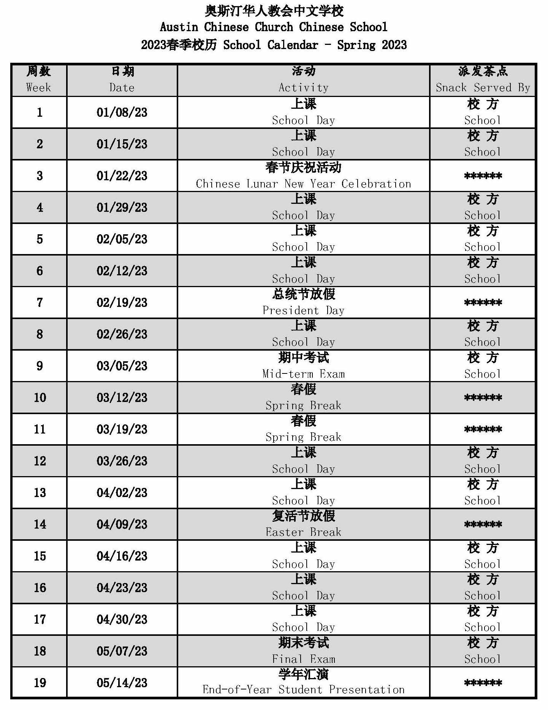

Registration
If parents register child/children by 12/25/2022, an early bird discount ($20 off) will be applied. Parents can also get a sibling discount ($10 off), if registering additional child/children.
If you have any questions, please email: acccsadmin@gmail.com
2023 spring Chinese class registration
Chinese School Introduction
中文學校簡介
- Austin Chinese Church Chinese School is well-known as a non-profit organization that combines Chinese culture and Christianity. Our school was established in January, 1989. Our school motto is: “Learn Chinese, spread the Gospel”. In our school's history of more than two decades, we have pursued a multi-faceted mission: to establish Chinese cultural consensus, to promote friendship and care for one another, to inherit Chinese cultural traditions, to promote Chinese language and culture education, to spread the spirit of God's love toward the world, and to evangelize the Chinese community. This year our teacher and management team includes 11 teachers, a principal and a church deacon. Our teachers are God loving Christians； they love students, love teaching, and are well educated and have rich experiences in teaching.We incorporate National Foreign Language Standards into our Chinese teaching; we utilize real life and authentic teaching materials for our curriculum, allowing students to learn Chinese language and culture in a lively environment. All the students, who were studying or have already graduated from our school, have achieved a top score of 5 on their AP Chinese exams. Our professional teaching and strong team of teachers is the best guarantee for our students to learn Chinese! In addition to learning Chinese, your child will greatly benefit in character building, cultural identity, and academic performance.
- 奧斯汀華人教會中文學校是本市久負盛名的以傳揚華夏文化和基督信仰為宗旨的非營利組織。 我校成立於1989年1月。我們的口號是：“學說中國話，福音傳天下”。辦學二十多年來堅持以“建立海外華人文化共識， 促進友誼與彼此關懷；承繼海外華人文化傳統，促進中文與文化教育；宣揚神愛世人的精神，促進華人社區福音化” 為使命宣言和教學方針。今年我們的教師和管理團隊共有十一位教師、一位校長和一位教會執事。 老師們都是愛主的基督徒，她們充滿愛心，熱愛教學工作，教學經驗豐富，均受過良好的高等教育。我們採用符合主流標準的中文教學法， 提供生活化、實用性的教學內容，讓孩子們在活潑生動的環境有效地學習漢語和中華文化。 在我校學習或畢業的學生參加中文AP考試都取得了最優秀的5分成績。我們專業的辦學水平和堅強的師資團隊是學生們學習中文的最佳保證！ 除了學習中文以外，孩子們會在品格塑造、文化認同、及課業表現上受益良多。
School Calendar
學校校歷
School Activities
學年活動
2018-2019課室點滴/ClassHighlight
2018-2019视频/Videos

2016-2017課室點滴/ClassHighlight

2016-2017视频/Videos